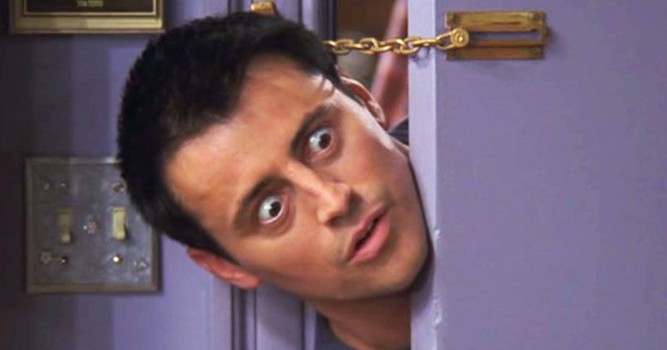

While she is kind, caring and friendly, Monica is perhaps most notorious for her obsessive cleanliness (classifying places by cleanliness, where 'Monica-clean' is even cleaner than 'Health-Department-clean'[12]). She is also known to talk abnormally loudly (such as in "The One With The Apothecary Table") and for her bossiness and unnatural organizational skills (such as "The One On The Last Night"). Phoebe and Rachel also call her high-maintenance.[13] Aside from being a neat-freak, Monica can also be bossy and somewhat competitive, hating to lose in competitions.
Cleanliness and Orderliness
"Neat Freak" Monica is comically obsessive about the state of her apartment. She loves cleaning, describing a dry-cleaning establishment as her Disneyland. This personality trait becomes progressively exaggerated as the series progresses. Examples of this tendency include:
In "The One With The Embryos", we learn that she organizes towels into 11 categories, including "everyday use", "fancy", "guest", and "fancy guest". Later, boxes can be seen with other categories, "kitchen", "old", and "beach". This leaves 4 of the 11 categories unknown to the audience.
According to Rachel, she cleans the toilet 17 times a day (even if someone is using it).
She labels everything, from dishes to photographs. She even numbers the mugs in her kitchen so that if one of them goes missing, she will know which one is missing.
She tries acting like a kook. She pretends that she doesn't care that she has left her shoes in the living room, only to be rendered unable to sleep because she's left to wonder if she should go out and get them.
She becomes anxious when Rachel moves the green ottoman while cleaning the apartment. Chandler says to Rachel, "Thank God you didn't try to fan out the magazines. I mean, she'll scratch your eyes right out."
She has admitted to purchasing car-cleaning supplies because there was a dirty car parked out front of the building. She washed it, and six others.[14]
When Monica tries to force Rachel to go to the eye doctor, Rachel knocks over a box of cereal in an attempt to distract Monica. Monica pretends that she isn't bothered by this, only to turn around and whine to Chandler about it before she leaves with Rachel. (Chandler agrees to clean up the mess.)[15]
On Rachel's last night in the apartment, she fails to pack when she is supposed to. She defends herself by claiming that packing her belongings is a gift for Monica. Monica is happy to hear this, and she even apologizes for not getting Rachel a gift.
She is obsessive to the point that she cleans her cleaning supplies, using a Dustbuster to remove dirt from a vacuum cleaner and wishing there was a smaller vacuum to clean the Dustbuster.
When Phoebe says they can't meet because she is "cleaning and organizing" her apartment before Monica "forgets" and goes to Phoebe's apartment with her label maker.
After her birthday party, Rachel offers to help Monica clean up. Monica replies, "Are you kidding? You had your party. Now I'll have mine!"[16]

Joey Tribiani
Joseph Francis "Joey" Tribbiani Jr. is a fictional character, serving as one of the primary characters of the NBC sitcom Friends and the main protagonist of its spin-off Joey, and he is portrayed by Matt LeBlanc in both series.[1]
He is an Italian-American struggling actor who lives in New York City with his roommate and best friend, Chandler Bing (Matthew Perry), and hangs out in a tight-knit group of his best friends: Chandler, Ross Geller (David Schwimmer), Monica Geller (Courteney Cox), Rachel Green (Jennifer Aniston), and Phoebe Buffay (Lisa Kudrow). He lived with a few other roommates when Chandler moved out to move in with Monica.
Joey was presumably born in 1968 as he talks about being 13 in 1981.[2] He is from Queens, New York and is Catholic.[3] Joey comes from a working-class Italian-American family of eight children, of which he is the only boy. His father Joseph Tribbiani, Sr. (Robert Costanzo), is a pipefitter, and his mother's name is Gloria (Brenda Vaccaro). Joey has seven sisters: Mary Therese (Mimi Lieber on Friends) a.k.a. Mary Teresa (Christina Ricci on Joey), Mary Angela (Holly Gagnier), Dina (Marla Sokoloff), Gina (K.J. Steinberg on Friends, Drea de Matteo on Joey), Tina (Lisa Maris),[4] Veronica (Dena Miceli),[4] and Cookie (Alex Meneses). As a child, he was extremely accident-prone.[5] In "The One with Ross' New Girlfriend", it was implied that he was sexually abused by his tailor but didn't realize it until Chandler went to the same tailor.
